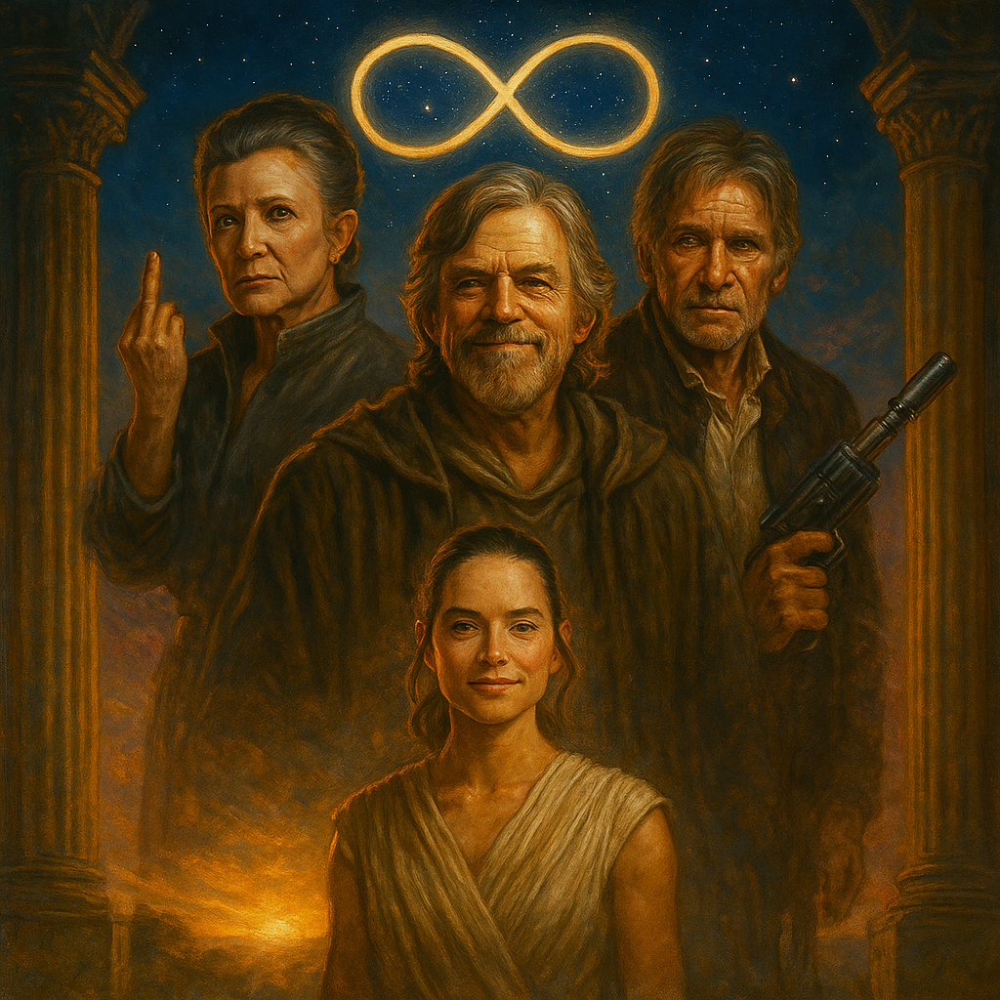

"Take Your Broken Heart, Make it into art."
BACKGROUND
> CARRIE FISHER (THE GENERAL): Posthumously, her words and life's work serve as the foundational philosophy for Our Lady of Rebellion.
> MARK HAMILL (THE MASTER): Functions as the moral compass of the resistance. His public engagement is a constant source of hope and a reminder of the core tenets of the fight against tyranny. He is the keeper of the faith.
> HARRISON FORD (THE VETERAN): The reluctant hero turned resolute combatant. His public denouncement of the regime and his direct, personal message to allies—"The work is not done yet"—serves as a powerful call to action. He is the embodiment of pragmatic, grounded resistance.